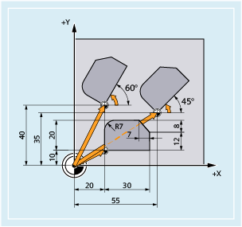
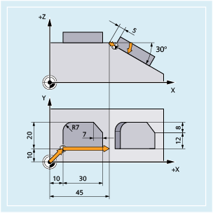
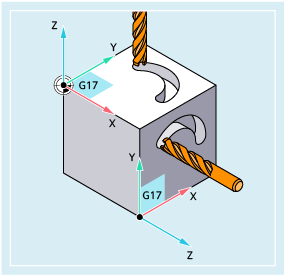

The workpiece coordinate system can be rotated in space using the ROT/AROT commands. The commands refer exclusively to the programmable frame $P_PFRAME.

Syntax
ROT X... Y... Z... / ROT RPL=...AROT X... Y... Z... / AROT RPL=...Meaning
| Notice |
Absolute frame instructions delete all programmed framesIf a programmable frame builds on existing frames, then the additive frame instruction should be programmed instead of the absolute frame instruction. |
Examples
Example 1: Rotation around the Z axis
In the following example, a workpiece is machined, on the top of which an identical shape appears multiple times. The program blocks to machine this shape are saved in a subprogram. The required workpiece zeros are set using programmable, absolute work offsets (TRANS). In addition, programmable additive rotations (AROT) must be executed around the Z axis perpendicular to the machining plane as the identical shapes on the workpiece are not arranged parallel to the axis.
| Program code | Comment |
|---|---|
| ... | |
| N30 G17 G54 | ; Machining plane X/Y, workpiece zero |
| N40 TRANS X20 Y10 | ; Absolute offset |
| N50 L10 | ; Subprogram call |
| N60 TRANS X55 Y35 | ; Absolute offset |
| N70 AROT RPL=45 | ; Additive rotation through 45°around the perpendicular Z axis perpendicular to the G17 plane |
| N80 L10 | ; Subprogram call |
| N90 TRANS X20 Y40 | ; Absolute offset (resets all previous offsets) |
| N100 AROT RPL=60 | ; Additive rotation through 60°around the perpendicular Z axis perpendicular to the G17 plane |
| N110 L10 | ; Subprogram call |
| N120 G0 X100 Y100 | ; Retraction |
| N130 M30 | ; End of program |
Example 2: Rotation around the Y axis
In this example, identical forms on the workpiece that are parallel to the axis, but inclined with respect to one another, are machined in one clamping operation. The program blocks to machine this shape are saved in a subprogram. The required workpiece zeros are set using programmable work offsets (TRANS and ATRANS). To machine the second shape, a programmable additive rotation (AROT) must also be performed around the Y axis to align the tool perpendicular to the inclined surface.
| Program code | Comment |
|---|---|
| ... | |
| N30 G17 G54 | ; Machining plane X/Y, workpiece zero |
| N40 TRANS X10 Y10 | ; Absolute offset |
| N50 L10 | ; Subprogram call |
| N60 ATRANS X35 | ; Additive offset |
| N70 AROT Y30 | ; Additive rotation around the Y axis |
| N80 ATRANS X5 | ; Additive offset |
| N90 L10 | ; Subprogram call |
| N100 G0 X300 Y100 M30 | ; Retraction |
| N110 M30 | ; End of program |
Example 3: Multi-face machining
In this example, identical shapes are machined in two workpiece surfaces perpendicular to one another. The machining sequence to machine this shape is saved in one subprogram. Using a programmable absolute work offset (TRANS) and two programmable additive rotations (AROT), the workpiece coordinate system is transformed so that the second shape can be machined, keeping the conditions necessary for the subprogram execution (machining plane G17, coordinate plane X/Y, infeed direction Z).
